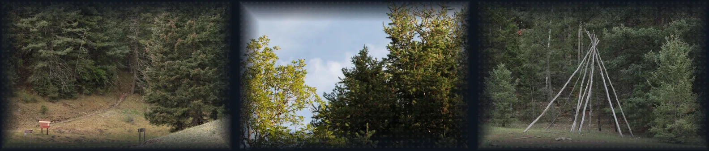
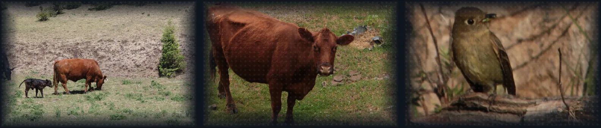
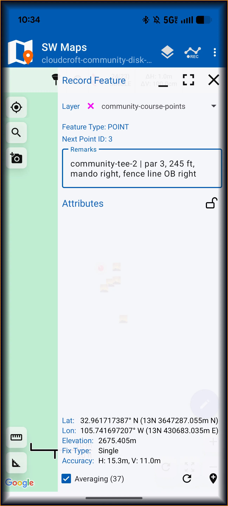
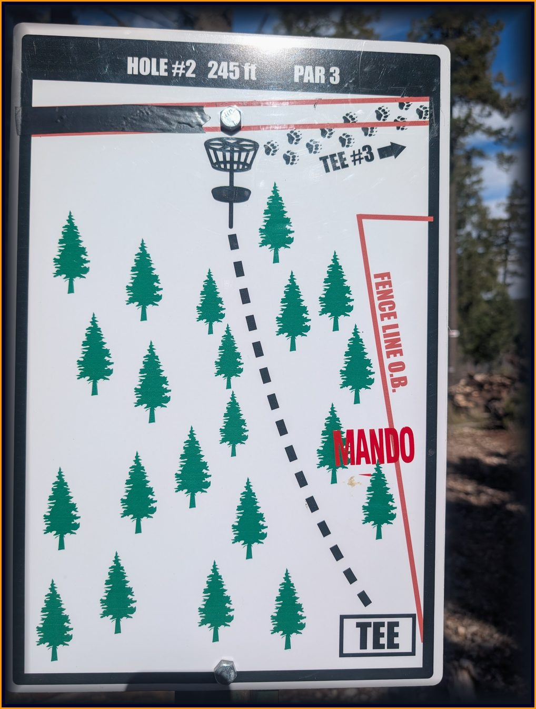
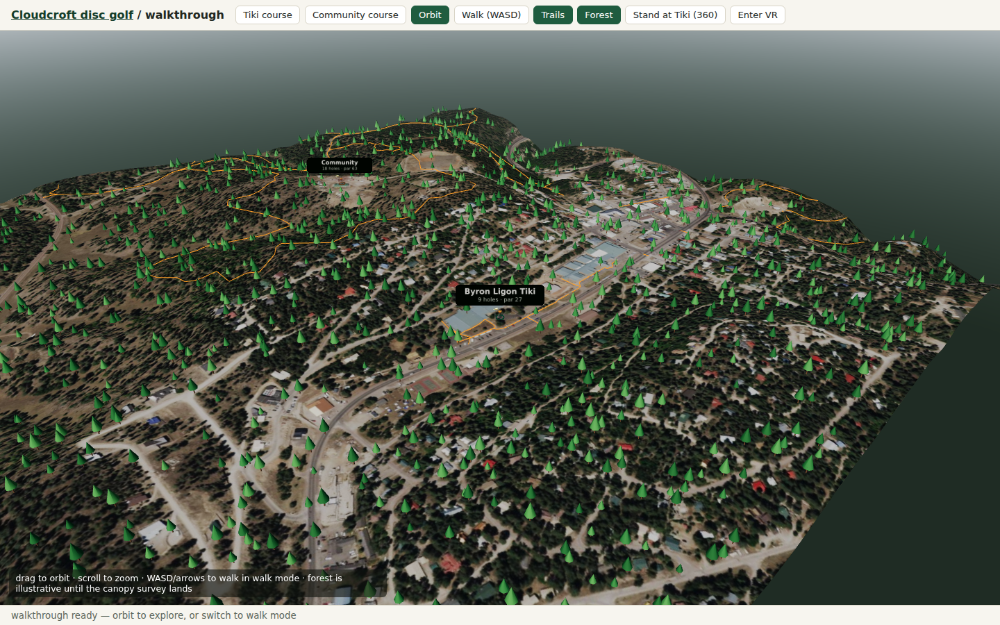
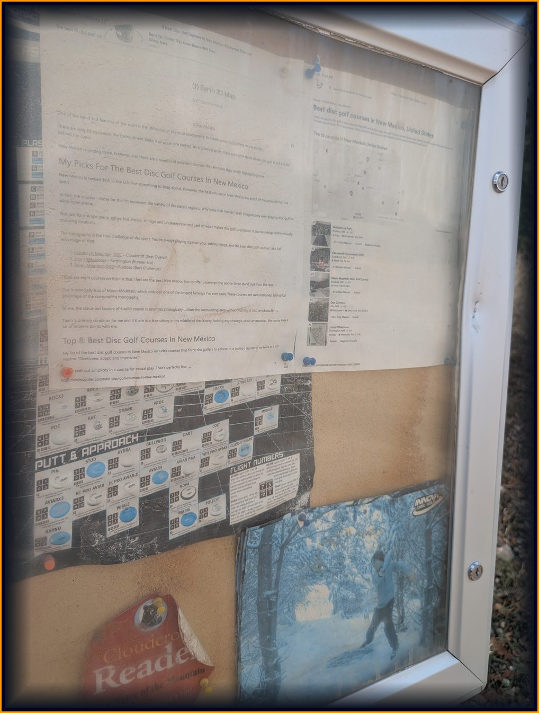

Two courses hand-built by Ray Haller
Byron Ligon Tiki — 9 holes, par 27, 901 feet of all-putter golf under aspen and doug fir at the west end of Zenith Park, redesigned May 2025. Cloudcroft Community — 18 holes, par 63, a wooded mountain track near the old baseball field with 40 to 80+ feet of elevation swing per hole, opened 2019, rated 4.6 stars from 500+ reviews. Haller cut the Community course out of the hillside by hand over six and a half months; it is now the second-ranked course in New Mexico.


The dataset
| Source | What it gives |
|---|---|
| USGS 3DEP 1 m DEM | One 248 MB tile covers both courses. Anchor elevations match the National Map to 0.1 ft — the elevation source of record for plays-like distances. |
| USGS NAIP 2022 60 cm imagery | One tile, cropped to a course window for the satellite toggle and draped over the 3D terrain. |
| OpenStreetMap trails | Live bbox extract: 46 paths + 26 footways with real trail names. The S3-native Daylight parquet path was attempted and rejected on measurement — no spatial partitioning; same data, bbox API, 20 seconds. |
| Ground GPS (Nov 1 survey) | Community holes 1–2 fully pinned (tee + basket averaged fixes, par/distance/mando notes, sign photos); hole-2 basket photographed; 6 unnamed Tiki points located. The rest is honest scaffolding until the next field day. |


From phone to scorecard
SW Maps project backups carry every point, note, and attached photo. A small extractor turns them into open GeoJSON — no app lock-in:
python dataset/scripts/swm2_to_geojson.py community.swm2 Photos/ survey/2026-11-01-community
# wrote survey/2026-11-01-community/points.geojson: 21 pointsValidation treats partial as a supported state — bad geometry fails, gaps are reported, never silently filled:
python dataset/scripts/validate_survey.py --partial
# 2026-11-01-community: 21 points — holes complete (tee+basket): [1];
# holes partial: [2]; unidentified points: 18
# partial survey ok: 3 named points, gaps are scaffoldingThen the adapter fills what the survey reached and scaffolds the rest, so the next field day lights up holes with no code change:
python dataset/scripts/partial_holes.py
# community: cloudcroft-community.json (2 surveyed rows, 21 survey points)
# tiki: byron-ligon-tiki.json (0 surveyed rows, 6 survey points)How it maps to the judging criteria
| Criterion | Evidence |
|---|---|
| Technical innovation | Plays-like distance from 3DEP elevation fused with ground-truth tee/basket GPS; per-hole geofences for AR overlays; 360-pano VR walkthrough of a real mountain course. |
| Craft and execution | Live on AWS behind CloudFront: Location Service tiles, Cognito guest auth shared by web and Android, Rust ARM64 lambdas, DynamoDB scorecard. Map opens fast, click/zoom per hole. |
| Usefulness and impact | Players get distances, plays-like yardage, trail crossings, a pocket scorecard. Builders get the reusable pattern — every ingest script documented, five steps to map any course. |
| Creativity and storytelling | Haller's chainsaw-built course, the 39-foot Tiki opener vs 80-foot Community elevation swings — told hole by hole, on the map and in the demo video. |
AWS services used and why
| Service | Role | Why this one |
|---|---|---|
| Amazon Location Service | Topo + imagery maps, place index, geofences, tracker, routes | One managed home for every spatial primitive; geofences trigger hole arrival on-site. |
| Amazon S3 | Dataset prefix + static hosting | Open-data tiles stage next to derived JSON; same bucket serves the bundle. |
| AWS Lambda (Rust, ARM64) | Plays-like distance + scorecard API | Sub-100 ms math at pennies per round. |
| Amazon DynamoDB | Scorecard rounds, on-demand | Schemaless rounds, zero ops, survives the phone in a pocket. |
| Amazon Cognito | Guest identity pool, one scoped role | No logins on the course; same role serves web and Android. |
| AWS CDK (TypeScript) | Whole stack as code | One deploy recreates everything. |
Hackathon entry checklist
| Requirement | State |
|---|---|
| Live map, publicly reachable on AWS | Live — bryanchasko.com/disc-golf/ |
| 3D walkthrough with VR toggle | Live — walk.html |
| Written project | This page, plus the Builder Center post |
| Demo video under 3 minutes | Recording next — script covers town, map tour, scorecard round, AR overlay, the pattern |
| Code | Private repo; the reusable pattern is the how-this-works writeup |


Status
Day-two build. Course anchors are geocoded, elevation comes from the USGS 3DEP 1-meter DEM, trails from OpenStreetMap, imagery from NAIP 2022. Community holes 1–2 carry ground pins; per-hole tee and basket pins for the rest land with the next survey — then AR overlays, plays-like distances, and per-hole geofences switch on.